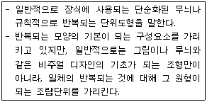
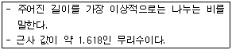
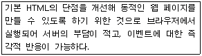
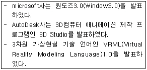
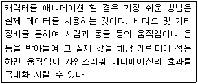
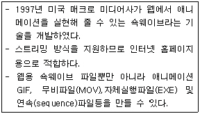
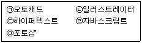

웹디자인기능사 (2009-07-12 기출문제)
1과목: 디자인 일반
1. 다음 중 빨간색이 가장 선명하고 뚜렷해 보일 수 있는 배경색으로 옳은 것은?
- 주황
- 노랑
- 흰색
- 보라
(정답률: 84%)

2. 다음 중 명도에 대한 설명으로 옳지 않은 것은?
- 명도의 밝기는 흑백사진에서 볼 수 있는 색상이 밝고 어두운 정도를 말한다.
- 색이 완전히 제거되고 단지 명도만이 존재하는 상태를 무색(achromatic)이라 한다.
- 색의 명도는 얼마나 많이 흰색이 혼합되어 졌는가에 따라 변화가 생긴다.
- 유채색의 명도는 밝은 음영(tint)과 어두운 음영(shade)으로 나타낼 수 있다.
(정답률: 59%)
3. 다음 중 디자인의 조건에 해당하지 않는 것은?
- 합목적성
- 심미성
- 경제성
- 유통성
(정답률: 92%)
4. 입체파(Cubism)의 대표적인 화가는?
- 피카소
- 쿠르베
- 찰스 자보
- 도미에
(정답률: 94%)
5. 단순화(Simple) 디자인의 장점으로 거리가 먼 것은?
- 장식성
- 접근 용이성
- 인식성
- 사용성
(정답률: 84%)
6. 다음 중 4차원 디자인이 아닌 것은?
- TV디자인
- POP디자인
- 애니메이션
- 무대디자인
(정답률: 64%)
7. 다음 중 1907년 헤르만 무테지우스를 중심으로 뮌헨에서 결성된 디자인 진흥 단체는?
- 드스틸(De Still)
- 독일공작연맹(DWB)
- 바우하우스(BAUHAUS)
- 멤피스(MEMPHIS)
(정답률: 85%)
8. 다음 중 주위색의 영향으로 오히려 인접색이 가깝게 느껴지는 현상을 의미하는 것은?
- 동화 현상
- 명시 현상
- 색의 수축성
- 중량 현상
(정답률: 86%)
9. 다음 중 디자인의 시각요소에 대한 분류로 옳지 않은 것은?
- 질감(texture)
- 색(color)
- 형(shape)
- 기술(technology)
(정답률: 91%)
10. 서로 다른 요소가 잘 어울려 결합하는 상태를 무엇이라고 하는가?
- 상징
- 조화
- 원근
- 강조
(정답률: 96%)
11. 색의 혼합보다 직물, 점묘화, 망판 인쇄와 같이 색의 근접 배치에 의하여 혼합되는 것은 ?
- 감법혼합
- 가법혼합
- 병치혼합
- 중간혼합
(정답률: 82%)
12. 저드(D.B.judd)의 “색채 조화론”에 해당하지 않는 것은?
- 질서의 원리
- 모호성의 원리
- 친근성의 원리
- 유사성의 원리
(정답률: 79%)
13. 다음이 설명하고 있는 것은?

- 패턴
- 텍스처
- 질감
- 콜라쥬
(정답률: 94%)
14. 다음이 설명하고 있는 것은?

- 비례
- 황금비율
- 루트사각형
- 프로포션
(정답률: 94%)
15. 어둠이 시작될 때 물체의 상이 흐리게 나타나는 현상과 가장 관계가 깊은 것은?
- 색순응
- 푸른킨예 현상
- 박명시
- 조건등색
(정답률: 75%)
16. 색의 3속성에 포함되지 않는 것은?
- 색상
- 명도
- 대비
- 채도
(정답률: 88%)
17. 다음 중 주목성에 대한 설명으로 잘못된 것은 ?
- 명시성이 높은 색은 어느 정도 주목성이 높다.
- 따뜻한 난색은 차가운 한색보다 주목성이 높다.
- 초록색이 빨강보다 주목성이 더 높다.
- 주목성은 색의 3속성과 관계가 있다.
(정답률: 86%)
18. 색의 점이(점증)는 디자인의 원리 중 어느 영역에 속하는가?
- 균형
- 율동
- 반복
- 조화
(정답률: 82%)
19. 시각적인 강한 힘과 약한 힘이 규칙적으로 연속 될 때에 생기는 율동의 요소와 거리가 먼 것은?
- 점증
- 반복
- 변칙
- 대칭
(정답률: 64%)
20. 태양광선이 투사되는 위치에 프리즘을 놓아 굴절된 광선을 스크린에 투사하여 나타난 여러 가지 색의 띠를 무엇이라고 하는가?
- 전자파
- 감마선
- 스펙트럼
- 자와선
(정답률: 93%)
2과목: 인터넷 일반
21. 인터넷에서 사용하는 통신 프로토콜은?
- MPEG
- KNC
- URL
- TCP/IP
(정답률: 89%)
22. bps는 무엇의 약어인가?
- bits per second
- bytes per second
- beeps per second
- bands per second
(정답률: 74%)
23. 웹페이지 제작 시 작업환경에서 보이는 그대로 결과물을 도출해 내는 방식은?
- GUI
- HCI
- MCP
- WYSIWYG
(정답률: 75%)
24. 파일 전송(FTP)서비스에서 하나의 명령어를 사용하여 file1, file2, file3을 송신하려 한다. 다음 중 올바른 것은 ?
- ftp > Is file1 file2 file3
- ftp > mget file1 file2 file3
- ftp > mput file1 file2 file3
- ftp > send file1 file2 file3
(정답률: 58%)
25. 다음 중 자바스크립트 변수명에 사용할 수 없는 것은 ?
- menu_7
- total
- 2cond_name
- _reg_number
(정답률: 70%)
26. 다음 중 웹 페이지를 디자인할 때 고려해야 할 사항이 아닌 것은?
- 사용자 개개인의 선호도나 사용수준에 맞춰 누구라도 쉽게 사용할 수 있도록 디자인한다.
- 사용자의 경험이나 학력 언어 능력 또는 집중력정도에 차이를 두어 사용자 개개인 별로 난이도에 맞게 디자인 한다.
- 사용자가 우연한 또는 의도하지 않은 선택의 결과로 어려움에 빠지는 경우를 최소화하도록 디자인한다.
- 사용자에게 필요한 정보를 효과적으로 전달하도록 디자인한다.
(정답률: 92%)
27. 일반적으로 웹브라우저에는 화면에 나타나는 데이터를 하드디스크의 일정한 공간에 자동으로 저장하여, 나중에 사용자가 해당 사이트에 다시 접속할 때 저장된 내용을 자동으로 불러와 사이트 접속과 데이터 전송에 소요되는 시간을 절약하게 하는 기능이 있다. 이를 무엇이라 하는가?
- Messenger
- Cache
- Driver
- Reload
(정답률: 73%)
28. 다음 중 일반적인 HTML문서의 기본구조로 옳은 것은?
- <HTML><HEAD></HEAD><BODY></BODY></HTML>
- <HEAD></HEAD><HTML><BODY></HTML></BODY>
- <HEAD><HTML></HTML></HEAD><BODY></BODY>
- <HEAD></HEAD><HTML><BODY></BODY></HTML>
(정답률: 90%)
29. HTML의 문단 구성과 관련된 Tag와 그 용도에 대한 설명으로 옳지 않은 것은?
- <BR> : 줄을 바꿀 때 사용한다.
- <P>: 문단을 바꿀 때 사용한다.
- <MID>..</MID> : 태그 사이에 있는 문단을 가운데로 정렬할 때 사용한다.
- <DIV>...</DIV> : 문서를 구분하여 문단별로 정렬할 때 사용한다.
(정답률: 72%)
30. 다음이 설명하고 있는 것은 ?

- SGML
- VML
- DHTML
- WML
(정답률: 88%)
31. 다음 중 웹 브라우저에 해당하지 않은 것은?
- 인터넷 익스플로러(Internet Explorer)
- 오페라(Opera)
- 텔넷(Telnet)
- 모자이크(Mosaic)
(정답률: 74%)
32. 웹 서비스를 이용할 때 HTML 문서를 보여주는 역할을 하는 프로그램은?
- 웹 서버
- 나모
- 웹 브라우저
- 드림위버
(정답률: 73%)
33. 자바스크립트 내에서 사용되는 배열(Array)객체에 대한 설명으로 옳지 않은 것은?
- concat() - 두개 이상의 배열을 결합하여 하나의 배열 객체를 생성하여 반환한다.
- join() - 배열 객체의 각 원소들을 하나의 문자열로 만들어 반환한다.
- sort() - 배열의 각 원소들을 내림차순으로 정렬하여 반환한다.
- slice() - 배열의 원소를 가운데 일부를 새로운 배열로 만들어 반환한다.
(정답률: 67%)
34. 연산자 좌우의 검색어를 모두 포함하는 데이터를 찾는 정보검색 연산자는?
- OR
- NOT
- AND
- AND NOT
(정답률: 76%)
35. 문서간의 이동이나 한 문서 내에서의 이동을 위해 사용되는 링크를 의미하며, 특정한 단어나 그림을 선택하여 이동과 연결된 다른 문서나 미디어로 이동하는 역할을 하는 것은?
- HTTP Text Transfer Protocol
- Hyper Text Markup Language
- Hyperlink
- Browser
(정답률: 83%)
36. 다음 HTML의 태그 중 문서의 본문 내용이 들어가는 것은?
- <HTML></HTML>
- <HEAD></HEAD>
- <BODY></BODY>
- <FONT></FONT>
(정답률: 85%)
37. 다음 인터넷의 역사 중 가장 나중에 일어난 것은?
- 웹 브라우저인 넷스케이프가 등장하였다.
- Gopher, WALS서비스를 시작하였다.
- TCP/IP 프로토콜 표준으로 채택되었다.
- USENET 서비스가 시작되었다.
(정답률: 58%)
38. 인터넷 프로토콜(IP)에 대한 설명으로 옳지 않은 것은?
- IP는 연결형 서비스를 제공하므로 신뢰성 있는 서비스를 제공한다.
- IP는 TCP, UDP, ICMP, IGMP 데이터를 전송하는 중요한 역할을 수행한다.
- IP 테이터그램은 목적지 호스트의 인터넷 주소를 포함한다.
- IP동작 중 IP데이터그램의 상실, IP테이터그램의 중복과 같은 오류를 발생하기도 한다.
(정답률: 44%)
39. 인물 정보를 대상으로 데이터베이스를 구축하여 전자우편 주소 등의 정보를 제공해 주는 사이트를 일컫는 용어는?
- 비비시모(Vivisomo)
- 옐로우페이지(Yellow Page)
- 화이트페이지(White Page)
- 옐로우북(Yellow Book)
(정답률: 64%)
40. 광대역 서비스 중 인터페이스 간의 연결을 제공하고, 데이터 전송만을 담당하는 베어러서비스와 관련이 적은 계층은?
- 물리계층
- 데이터링크 계층
- 네트워크 계층
- 전송 계층
(정답률: 50%)
3과목: 웹그래픽스 디자인
41. 다음 중 Photoshop 파일로 옳은 것은?
- default.asp
- index.html
- main.psd
- script.js
(정답률: 86%)
42. 다음은 컴퓨터 그래픽스의 역사 중 어느 시대에 대한 설명인가?

- 1960년대
- 1970년대
- 1980년대
- 1990년대
(정답률: 62%)
43. 어느 특정분야에서 우수한 상대를 표적 삼아 성과차이를 비교하여 이를 극복하기 위해 상대의 뛰어난 점을 배우면서 자기혁신을 추구하는 기법을 무엇이라 하는가?
- 벤치마킹
- UI디자인
- 프로모션
- 컨셉개발
(정답률: 86%)
44. 다음 중 웹사이트에 등재할 이미지의 크기가 클 경우, 크기를 조정하기 위한 가장 올바른 방법은?
- 웹에서 소스 수정으로 사이즈를 조정한다.
- 드림위버에서 이미지 크기를 줄인다.
- 포토샵의 이미지 사이즈에서 픽셀 수를 줄인다.
- 나모에서 웹용으로 저장할 때 Quality를 낮춘 다.
(정답률: 77%)
45. 웹 그래픽 제작에서 백그라운드 이미지 삽입에 관한 설명으로 가장 적합하지 않은 것은?
- 줄무늬를 배경 이미지로 제작
- 도형을 이용한 패턴 제작
- 부드러운 그라데이션 제작
- 동영상을 배경 이미지로 제작
(정답률: 89%)
46. 컴퓨터그래픽스 시스템의 입력장치에 해당하지 않은 것은?
- 디지타이저
- 스캐너
- 마우스
- 플로터
(정답률: 84%)
47. 다음이 설명하고 있는 애니메이션 제작과정은?

- 모델링
- 레코딩
- 렌더링
- 모션캡쳐
(정답률: 72%)
48. 물체의 윤곽선이 낮은 해상도에서 곡선이나 사선을 표현하였을 때 계단 모양 또는 지그재그 모양으로 나타나게 되는데 이때 나타나는 부자연스러움을 없애기 위해 픽셀의 그리드에 단계별 회색을 넣어 계단 현상을 없애주는 것을 무엇이라 하는가?
- 듀오톤(Duo tone)
- 셰이브(Shape)
- 안티앨리어스(Anti-alias)
- 하프톤(half tone)
(정답률: 93%)
49. 컴퓨터 그래픽스에서 문자를 표현하기 위한 기본단위는?
- 워드(word)
- 픽셀(pixle)
- 바이트(byte)
- 텍셀(texel)
(정답률: 57%)
50. 일반적으로 포토샵에서 웹페이지를 제작하기 위해 가장 적당한 이미지 해상도는?
- 72dpi
- 100dpi
- 150dpi
- 200dpi
(정답률: 78%)
51. 스코어, 캐스트, 페이트, 링고로 구성되어 있는 애니메이션 저작도구는?
- Premiere
- Paint shop
- Director
- 3D Studio Max
(정답률: 49%)
52. 내비게이션에 관한 설명 중 가장 거리가 먼 것은?
- 일관성 있는 내비게이션을 만들어야 한다.
- 로딩 속도를 고려해야 한다.
- 최대한 많은 메뉴를 만들어야 한다.
- 링크가 끊어진 페이지가 없어야 한다.
(정답률: 89%)
53. 웹 사이트의 가상경로를 예상하여 기획하는 것으로 웹 사이트의 설계도이며 구체적인 작업 지침서 역할을 하는 것은?
- 시안
- 레이아웃
- 네비게이션
- 스토리보드
(정답률: 65%)
54. 다음 중 모니터 해상도를 나타내는 픽셀에 관한 설명으로 틀린 것은?
- Picture와 Element의 합성어이다.
- 이미지의 최소단위이다.
- 픽셀의 수치가 낮을수록 이미지 해상도가 높다.
- PPI는 Pixl Per Inch의 약자이다.
(정답률: 85%)
55. 변화되는 여러 개의 장면을 연속적으로 나타내어, 움직이는 것처럼 표현하는 기술은?
- 맵핑
- 모델링
- 크로마키
- 애니메이션
(정답률: 91%)
56. 다음이 설명하고 있는 것은 ?

- 이미지
- 클레이
- 컷아웃
- 플래시
(정답률: 88%)
57. 플래시에서 맨 앞과 맨 끝 키 프레임에만 변화를 주면 중간과정을 만들어 주는 것을 무엇이라고 하는가?
- 프레임
- 트위닝
- 오니언스킨
- 플레이헤드
(정답률: 78%)
58. 다음 중 동영상 관련 파일포맷으로 옳지 않은 것은?
- asf
- wmv
- avi
- xml
(정답률: 71%)
59. 콘텐츠가 서로 조화를 이루어 논리적으로 보일 수 있도록 시각적 계층구조를 만드는 것을 무엇이라 하는가?
- 웹 타이포그라피 디자인
- 웹 컬러 디자인
- 웹 레이아웃 디자인
- 내비게이션 디자인
(정답률: 61%)
60. 다음 소프트웨어 중 2D 평면 디자인을 할 때 사용하는 소프트웨어로만 나열된 것은?

- (ㄱ)(ㄴ)
- (ㄷ)(ㄹ)
- (ㄷ)(ㅁ)
- (ㄴ)(ㄹ)
(정답률: 70%)